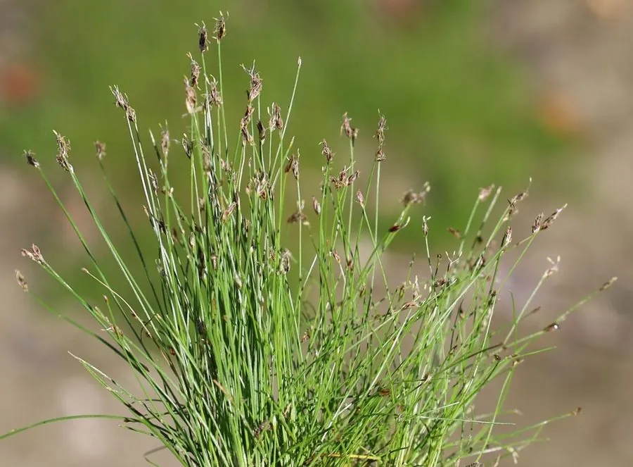

水生植物 · 植物界
牛毛毡 Eleocharis acicularis

莎草科多年生湿生草本，茎细如牛毛、丛生成毯，是水族箱前景草与湿地绿化常用的小型水生植物之一。
- 分类
- 门被子植物门纲木兰纲目禾本目科莎草科属荸荠属
- 栖息环境
- 沼泽、水田、池塘浅水与湿沙地，喜强光、耐低温
- 地理分布
- 北半球温带与亚热带广布，中国南北各地常见
- 保护级别
- 暂无评估；分布广、种群稳定
物种志
牛毛毡为莎草科荸荠属多年生湿生草本，具细长的匍匐根状茎，秆密集丛生，高 5–20 厘米，粗不足 1 毫米，形如针毛。叶退化为膜质鞘，仅基部可见。小穗顶生，卵形，长 2–4 毫米，花两性，花期 6–9 月；小坚果倒卵形，表面有细纹。
牛毛毡广布于北半球温带与亚热带的沼泽、水田、池塘浅水和湿沙地，中国南北各地常见，适宜水深 0–15 厘米，喜强光、凉爽与贫至中等营养的水体。它靠匍匐茎迅速蔓延，能在泥面形成致密的“草毯”，是水族箱前景草中模拟草原景观的经典材料，也可用于湿地公园与人工湿地的地被绿化。栽培需强光与充足二氧化碳，缺光时茎秆徒长、失去紧凑形态；分株或分切草毯即可繁殖。
形态与习性
- 株高5–20 厘米，秆粗不足 1 毫米
- 水深适宜水深 0–15 厘米，可湿生或浅水
- 水质喜清凉软水，pH 6.0–7.5，需充足二氧化碳
- 光照需强光，弱光下茎秆徒长倒伏
- 生长靠匍匐茎蔓延，可铺成致密草毯
- 繁殖分株或切分草毯，也可播种
趣味知识
- 牛毛毡的“叶”其实退化成基部膜质鞘，进行光合作用的是细如针的茎。
- 在水族箱强光下，它会贴着底砂蔓延成一片“草原”，是前景造景的经典选择。
- 它的茎极细，容易缠住鱼虾，清理时需要轻柔操作。
- 稻田中的牛毛毡常被视为杂草，但它耐水淹、覆盖快，也可作湿地绿化地被。